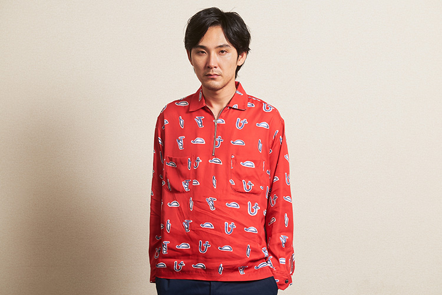
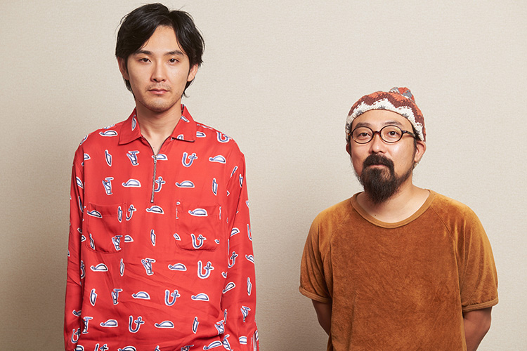
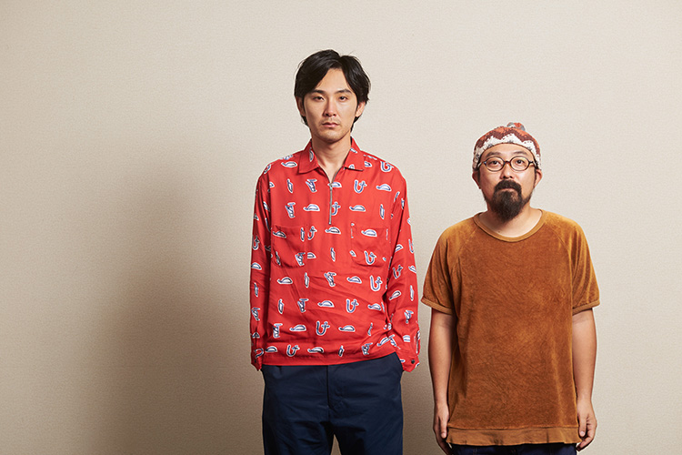

北杜夫の児童文学の名作を映画化した山下敦弘監督の最新作『ぼくのおじさん』が11月３日より公開される。現在公開中の監督作品『オーバー・フェンス』と奇しくも同時期に発表されるものの異なる味わいを持つ本作は、市井の人々の悲喜交々を生々しく描いてきた山下流喜劇の必ずしも延長線上にない昭和的な懐かしさを備える心和むホームコメディ。甥っ子の小学生、雪男の目線で描かれる、偏屈だけどチャーミングで憎めない主人公の"おじさん"を演じるのが、言わずと知れた映画俳優、松田龍平。ハワイロケを敢行し、年端の離れた凸凹コンビのロードムービーに展開する本作について、２人に話を聞いた。
龍平君の纏ってる空気感を活かせる直感はあったので、"おじさん"はこんな人だから、みたいなことは言わないようにしました。（山下）
山下監督が描いてきた「喜劇」と少しテイストが違うこの独特な世界観は、龍平さん演じる“おじさん”の造形に支えられていると思います。この“おじさん”をどう作り込んでいきましたか？
松田：
イメージとしては、（甥の）雪男の目線で語られる“おじさん”というか、雪男の書く作文の中の“おじさん”。だから、コミカルにやり過ぎるくらいのことがあってもいいのかなって気持ちでした。自分なりのおじさん感っていうことだと思うんですけど、おじさんを…、そう、おじさんを意識するみたいな…（笑）
山下：
言っても、龍平君はまだ若いしね。
松田：
まだ33歳なので。もちろん、若い子からしたら、十分おじさんなんですけど。だから、自分が感じるおじさんを求め続けたというか…（笑）
山下：
作り込むみたいなことではなく、何て言ったらいいんだろう、普段の龍平君の纏ってる空気感を活かせる直感はあったので、“おじさん”はこんな人だから、みたいなことは言わないようにしました。龍平君も言った通り、子供の目から見た“おじさん”を描いた映画なので、やるべきことはもう脚本に書いてあって、原作の北杜夫さんの味をどう汲むかってことがまず大事で、最初はそのハードルが高かった。ある種の特殊な世界観じゃないですか。起こっている出来事は現実的で、ファンタジーと割り切れるほどにはファンタジーに寄っていないファンタジーというか。
全てのキャストの方々に言えると思うんですけど、「誇張した芝居」を「自然体で演じる」というような、言葉としては矛盾するんですけど、そのさじ加減が絶妙で。
松田：
コミカルにやろうって気持ちで自分はいたけど、山下さんが撮ることでバランスが取れるというか、山下さんだったら、人間臭くないキャラクターもちゃんと人間臭く撮ってくれるだろうなって、安心感はあったんです。山下さんは人間を生々しく撮る監督だと思うので、この映画はそれに一番遠いところをやってるのかなって気はしました。
山下：
本来、こういう世界観って舞台向きだと思うんですね。舞台という空間では成立しやすいんだけど、映画となるとまたちょっと違うから難しい。原作の時代設定にしてもそうで、１ドルが360円だった頃、ハワイ旅行が夢の時代の話なわけだから。
映画の設定は、現代の話に書き換えられていますよね？
山下：
そうですね。一応、現代にしてるんですけど、その線引きも自分の中では強く拘っていなかったんです。「アメリカ製のお人形がいいわ」って台詞がある時点でもう悟ってました（笑）自ずと醸し出されるノスタルジーはあるだろうと予想してたところはあって、それでも、このスタッフと俳優さん達で作る意味がある。原作の時代を知っている世代の、例えば、山田洋次監督が撮ったとしたら、また違った映画になると思うし、これを僕らの世代が撮ることで僕らのオリジナルな部分は出ると信じていました。

美術や照明にも狙った時代感があって、例えば、“おじさん”とエリー（真木よう子）が初対面する場面は、敢えてあからさまな紋切り型でそれが一層、笑いを誘います。
山下：
“おじさん”の脳内オーケストラが鳴ってる（笑）
松田：
山下さん、こういうことするんだって。チャレンジしてるなって（笑）
山下：
でも一目惚れってああいうことですよ。この世界における一目惚れってあれしかない。出会い頭にぶつかって、パッと見たらマドンナがいたっていう状況の演出と言えば、あれしか選択肢はないです（笑）
松田：
（笑）
そのような演出を「山下敦弘」がしていることも、それを「松田龍平」が演じていることも、新鮮でした。
山下：
そうですね。チャレンジの連続でしたよ。自分達の記憶を探りながら、いい意味で型に嵌めていくというか、今これをやることでズレも生じるだろうし、だからこそやる意味については自覚的でした。
それが見事に作品性になっていますよね。龍平さんは山下監督の映画に対して、どんな印象を持っていましたか？
松田：
もちろん好きでした。作品によってそれぞれ違うと思うんですけど、登場人物に説得力がありますよね。ちゃんとそこに存在してる。今回の脚本を最初に読んだ時は、まだ分からなかったですね。山下さん頼みなところが大きくて、とりあえず一回話を聞いてみようとは思いました。
それは期待に近い気持ちだったんですか？
松田：
いや、少し読んで一旦置く感じでした。これは何だろう？って（笑）
山下：
一方、こっちでも、龍平君、これをどうやるんだろう？って（笑）
お互いに距離の離れた場所で思っていたんですね（笑）
松田：
それで山下さんに一回会って話をして、気になるポイントについて「一体どうやるんですか？」みたいな話をしたんですけど、山下さんも「いや、分かんないだよね。とりあえずやってみようと思ってる」って（笑）
山下：
（笑）まあでも、龍平君より先にオーディションで色んな子供達に会っていたから、雪男の芝居を見ていく中で、吟味じゃないですけど、なんとなく掴んではいたんです。いきなり「よーいドン！」では出来ない世界観だと思っていたので、北さんの世界観に体を慣らしていくような作業を僕はしていたので、どちらかと言うと、龍平君の方が不安だっただろうなと思う。
松田：
不安はありましたね。
山下：
そう、龍平君は衣装合わせとか、僅かな時間の中で徐々に掴んでいったんだと思うんだけど、相当難しかったと思いますね。それこそ現場で「これ、いつの時代なんですか？」って龍平君に聞かれたら、たぶん答えられなくて撮影止まってたと思う（笑）

小学生の雪男とのやり取りで、“おじさん”の子供っぽさが逆に引き立つ、ある種のバディムービーだと思うんです。凸凹なコントラストを際立たせる相棒である雪男役の大西利空君との呼吸はいかがでした？
山下：
利空はクランクイン前から台本が全て頭に入っていたので、とにかくもうブレなかったですね。きっちりした芝居をやってくれました。
松田：
最初から最後まで芝居に関してはブレなかったですよね。あと、現場の雰囲気が利空中心で進んでいったので、それに巻き込まれながら、「もっとやれ、もっとやれ」って盛り立ててました（笑）利空も最初はちゃんとしてたけど、割と速い段階でいい意味で緩んできたと思います。現場でたまに寝ちゃったり、撮る直前まで遊んでいたり（笑）でも、芝居に入るとちゃんと雪男なんです。何より、スタッフ皆が利空に首ったけでした。それで、ハッと気付いちゃったんですよ。「あれ？誰も自分のこと見てないな」って（笑）山下さんもほとんど演出するのは利空だし、完全に彼が中心なんです。カメラが回るギリギリまで自由に遊んでいるから、皆がそれに引っ張られるんですよね。子供がいることで出来上がる特有の温度感に現場全体が包まれながら撮影してたから、それがこの映画の色になってるのかなって思いますね。
山下：
それは絶対あるね。あと、この映画を一番信じてたのが、もしかしたら利空だったんじゃないかな。僕らは気を抜くとブレちゃうんだけど、「僕の準備した芝居はこういうことですよ」っていう妙に揺るがない自信で、利空が引っ張ってくれたおかげはある。オーディションから参加して、台本も読み込んでくれて、事前にイメージしていたものがあるんだと思うんです。雪男のベースだけは現場にあったので、自然とそれが軸になった。ああいう空気感は初めてでしたね。利空がこの映画の完成を一番楽しみにしているんですよ。クランクアップの時は大泣きでしたから。
クランクアップ直後、涙ぐむ利空君を龍平さんがハグしたそうですね。
山下：
アップする３、４日前くらいから既に様子が変だった。飯食べてたら急に泣き出して、それを見た龍平君が優しく「大丈夫」って。それを見て僕はキュンときましたけど。
松田：
（笑）
最後に。映画の本筋ではないですが、“おじさん”、雪男、エリーの３人が高台の丘からパールハーバーを眺めるハワイでのシーンがあります。殊更にやらず、サラリと問題提起しているところが山下監督らしいと思いました。
山下：
原作には、移民の話やパールハーバーについての話が重要な形で出てくるんですけど、どういう描き方をするかは悩んだんです。二転三転あって、軍事施設を見に行くという件りは許可がおりなかったんですけど、絶対にパールハーバーについてはやらなければいけないと決めていて、僕らが出した答えがあのシーンなんです。パールハーバーって、現地では施設を見て回れるようになっていて、テーマパーク化しているらしいんです。だけど、僕達にはそういう印象がない。零戦が攻めてきたように聞こえる飛行機の音を足そうとも考えたけど、いや、そういうことではないと思って止めました。
ここでの“おじさん”の立ち姿や口調も心なしか毅然として見えました。
松田：
“おじさん”は何も変わってないです。エリーのことしか考えてない。
山下：
はははは（笑）
松田：
エリーのことしか考えてないけど、でもほんの少しだけ、雪男が隣で見てるということは意識してる。“おじさん”自身は大学の講師だから詳しいと思うんです。でも、“おじさん”の本心を言ったら、エリーのことだけというか、大事なのは「エリーさんがこっちを見てる」ってところでしかないはずだから、変に重さというか、特別な何かは要らない。歴史を知らないかもしれない雪男が隣にいる。ほんの少しその気持ちがあるだけなんです。
山下：
シーンのカット尻は長くしているんです。平和な住宅街から３人がパールハーバーをただ眺めるだけのなんてことないシーンで、最初に見た人は流してしまうかもしれないけど、意味は含まれている気はします。
